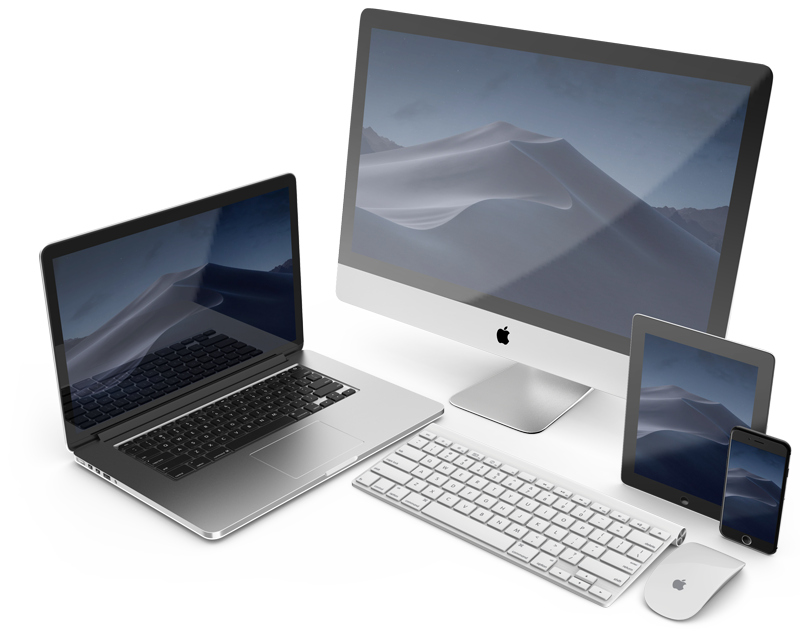
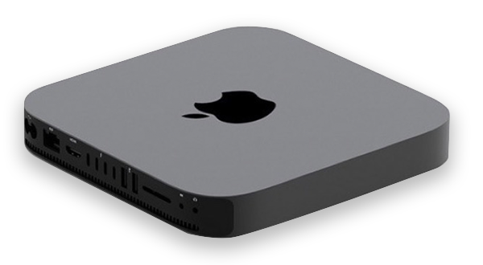

Nuestro servicio técnico para dispositivos de la marca Apple dispone de una gran experiencia y conocimiento sobre el mundo Mac.
| MacBook | MacBook Air | MacBook Pro | iMac | iMac Pro |
|---|---|---|---|---|
| Cambio de batería | Accidente líquido | Solución cable Flexgate | Reparación conector de pantalla | Cambio conector de pantalla|
| Cambio de pantalla | Cambio de batería | Cambio de batería | Reparación fuente de alimentación | Cambio de fuente de alimentación |
| Cambio de teclado | Cambio de pantalla | Cambio de pantalla Retina | Reparación de pantalla | Cambio de pantalla |
| Placa base | Cambio de teclado | Cambio de teclado | Placa base | Placa base |
| Reparación tarjeta gráfica | Placa base | Placa base | Reparación de tarjeta gráfica | Reparación de tarjeta gráfica |
| Mejoras | Reparación de tarjeta gráfica | Mejoras | ||
| Mejoras | ||||
| iPhone | iPad | Mac Pro | Mac Mini | Recuperación de datos |
| Cambio de conector de carga | Cambio de conector de carga | Cambio de fuente de alimentación | Cambio de fuente de alimentación | |
| Cambiar pantalla | Cambiar pantalla | Reparación de tarjeta gráfica | Reparación de tarjeta gráfica | |
| Cambio de táctil | Cambio de táctil | |||
| Placa base | Placa base |
Tarifa plana en soporte Mac para particulares
Ahora, además de las reparaciones y el servicio técnico informático a domicilio, ofrecemos una tarifa plana de soporte informático en remoto para ayudarte a solucionar cualquier problema que te surja.
Este servicio, solo para particulares (empresas consultar) consiste en una tarifa plana de 2 horas mensulares de servicio técnico en remoto por 29,99€ al mes.